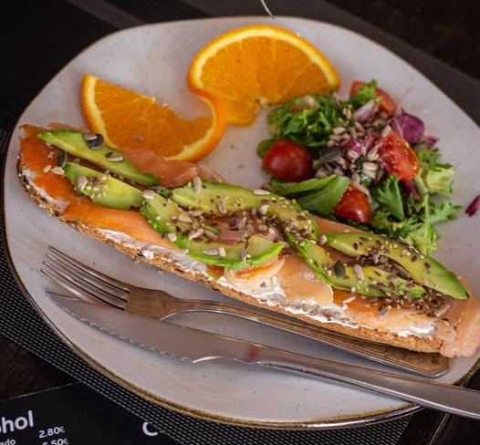
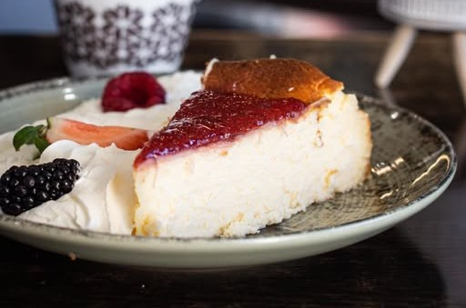

Restaurante & Cafeteria
Bienvenidos a Cafeteria Delicias
Tu rincón favorito en Rojales. Café de especialidad, desayunos gourmet y una terraza donde cada momento es especial
Sobre Nosotros
Mas que una Cafeteria, una experiencia
En Delicias Ciudad Quesada creemos que el verdadero placer está en los pequeños momentos. Un café bien preparado, una tostada con ingredientes frescos, una conversación tranquila en nuestra terraza
Café de Especialidad
Granos seleccionados tostados con pasión para cada taza perfecta
Postres Caseros
Dulces artesanales preparados cada día con ingredientes frescos y mucho cariño
Ambiente Acogedor
Un espacio acogedor donde te sentirás como en casa
100% Recomendado
Recomendaciones de nuestros clientes
NUESTRA CARTA
Delicias para todos los gustos
Desde desayunos completos hasta meriendas irresistibles. Descubre nuestras especialidades preparadas con ingredientes de primera calidad.

Tostadas Gourmet
Salmón, aguacate y más. La forma perfecta de empezar el día

Bollería Artesana
Tartas caseras y postres cremosos que te harán perder la cabeza
Café de Especialidad
Espresso, cappuccino, latte art... Preparados por baristas expertos
Consumo en local - Terraza - Recogida en establecimiento
Precios económicos
CONTACTO
Ven a visitarnos
Estamos en el corazón de Ciudad Quesada, en el Boulevard. Ven a disfrutar de nuestra terraza y nuestra cocina casera.
DIRECCIÓN
Avenida Las Naciones 22
Ciudad Quesada, Rojales, 03170
TELÉFONO
625 55 15 87
inakokina1982@gmail.com
HORARIO
Calculando...
Consultar horarios en Google